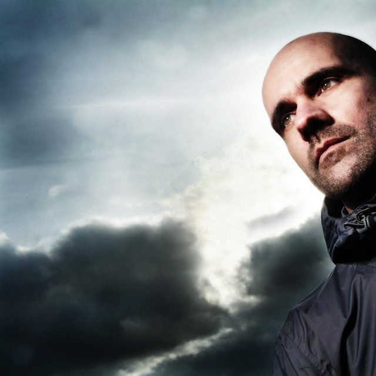

John '00' Fleming: Carving out his own path


John ‘00’ Fleming is definitely a super nice guy. But his choice of musical direction alone marks him as somewhat of a contentious figure, even if he’s easy-breezy in person. Several years ago when he struck out along a new path and began to steer away from traditional trance sounds, seduced by the swirling melodies and hypnotic rhythms of the psychedelic trance scene, it definitely came as a surprise to a lot of people. But according to Fleming, it’s a widely-held misconception that psytrance was a new direction for him – he claims it’s where he has his roots.
“That’s where my love of trance started way back in the early 90s,” Fleming told ITM, pointing to the early goa trance sounds of Astral Projection and Juno Reactor as what go him into dance music in the first place. “Then goa trance faded away and later resurfaced as psytrance, which was a bit too heavy for me in the beginning,” he claims. And indeed, it’s Fleming’s heritage as a DJ that plays big-room progressive trance that he was more widely known for, until recently at least. When trance blew up big in the late 90s, swept up in the wave created by the Cream and Gatecrasher brands with their massive weekly parties in Sheffield and Liverpool, John ‘00’ Fleming was up there in the DJ booth along with Paul Oakenfold, Scott Bond and the rest. But even if trance is just as popular as ever in 2008, it’s no secret that Fleming eventually grew bored of what he was hearing.
“The ‘regular’ trance scene just isn’t doing anything for me,” Fleming says. “I’m just not getting excited by it. And I swayed towards the psytrance end of things, purely because it’s a better crowd and better music coming from that scene for my liking.” And while there’s plenty of excitement currently building around the fresh wave of ‘nu-trance’ producers like Marcus Schossow, John O’Callaghan and Sander Van Doorn, who’ve been pushing the boundaries by bringing elements of progressive, techno and electro into their sound, it’s still not really much chop for Fleming.
“It’s gotten pretty stale. I remember in ’95 when this new trance sound came out it was really exciting, it was full of energy with these lovely melodies and breakdowns. But if you look at the format, it’s exactly the same today… Listening to all this new music that’s sent to me every week, or just a simple look on Beatport under ‘New Releases’, it’s pretty much all in the same format. That’s not exciting for me, it’s just not moving forward.” And he reckons he’s hanging onto the true definition of trance, in its purest sense. “I tend to feel the rest of the world has gone a bit poppy,” he says. “By definition it’s meant to trance people out on the dancefloor, it’s cleverly using sounds in order to make people lose themselves. But that’s not what it’s become now. It’s just a pop song with a generic structure.”
Whether you agree with Fleming’s assertions or not, there’s a general consensus that his new direction has been a good thing – both for his own career, as well as for the good of the wider trance scene in general. And he reckons his about turn in music selection was welcomed with open arms by all sides of the trance scene. “My style fits firmly in the middle of both scenes. I’m not a psytrance DJ,” he insists. “I just happened to slip into that world. My music still does have elements of that original trance sound, it’s got nice melodies and it’s got lush moments.” But by straddling the middle ground between the two scenes, he brings a point of difference to the events that he’s booked to play at. “What the psytrance world is saying is that I’m, bringing something new into their scene. It breaks up the night and it’s bringing something new, and they love it.” And he sees the exact same thing when he returns to his old stomping grounds of Gatecrasher and the like. “The ‘Crasher kids, they love it… otherwise all the music sounds the same, but when I come on I’m bringing something different,” he says.
While Fleming still stands side by side with the other big-hitters in the trance scene like Armin van Buuren, Tiesto and Ferry Corsten, he’s also been successful in differentiating himself from the pack. But a side effect of this is that by forging his own new path, Fleming can often feel like he’s standing out on his own. “It is a tough world out there,” he says. “There is one person who is close to me and what I’m doing, that’s Christopher Lawrence and we’ve had many conversations about it. You never question what you’re doing, but you can feel alone out there and it’s tough. Especially when placed alongside someone like Armin.”
Keen to fan out the flames of potential controversy, Fleming reassures us that he’s “very good friends” with the smiling Dutchman. But admittedly, their sounds are completely different. “His is a full-on energetic sound, and that’s why people love him. But when you play a set next to him it’s very difficult because my sound is a lot deeper. Yes it has its crescendos, but it’s not a crescendo in every moment of the track. If people have had candy thrown at them for two hours, when I come on it seems to go a bit flat.”
Want a taste of what Fleming is playing? His latest release Psy-Trance Euphoria is due out in Australia through Ministry of Sound later this year, a double-disc mix compilation that comes with a bonus third disc of his own production material, which is a prelude to his full artist album that’s due later this year. It seems people’s attention is being drawn towards psytrance as a genre, and Fleming’s support has only helped drive this. But he’s wary of being branded as an ambassador. “It was hard when they asked me to do that,” he says of his decision to slap the ‘psy-trance’ title on his latest release. He’s representing himself as a DJ, and he’s keen to emphasise that he’s playing the particular elements that inspire him personally, what he tags as the ‘morning sound’. It’s the ‘full on’ side of psychedelic trance that most people would be familiar with, but none of this really features in his sets. “I don’t understand it. It scares me,” he laughs.
Even if he’s cautious of being branded as some kind of psytrance diplomat, the responsibility has nonetheless fallen on Fleming help shift how the public perceives the psychedelic trance scene. “People perceive psytrance as really fast music, acid noises and people dancing naked in the field. But there’s a different sound, and it’s probably some of the best music in the world.” And for anyone on the hunt for something new, psytrance parties can provide a whole new experience. “The programming of the event is done how it used to be, where it starts off really low, builds to the really hard stuff and then slows it back down again. It kind of unwinds you before you go home, and as the ‘morning’ tag suggests, it’s playing as the sun comes up. And that’s the perfect music for that occasion, you’ve got some very nice deep trance sounds and as the sun rises, you’re lost within the moment.”
Keep an eye out for the Australian release of Psy-Trance Euphoria later this year, and catch John ‘00’ at the following remaining shows on his tour…
Fri 4th July – Home, Sydney
Sat 5th July – Syrup Nightclub, Hobart